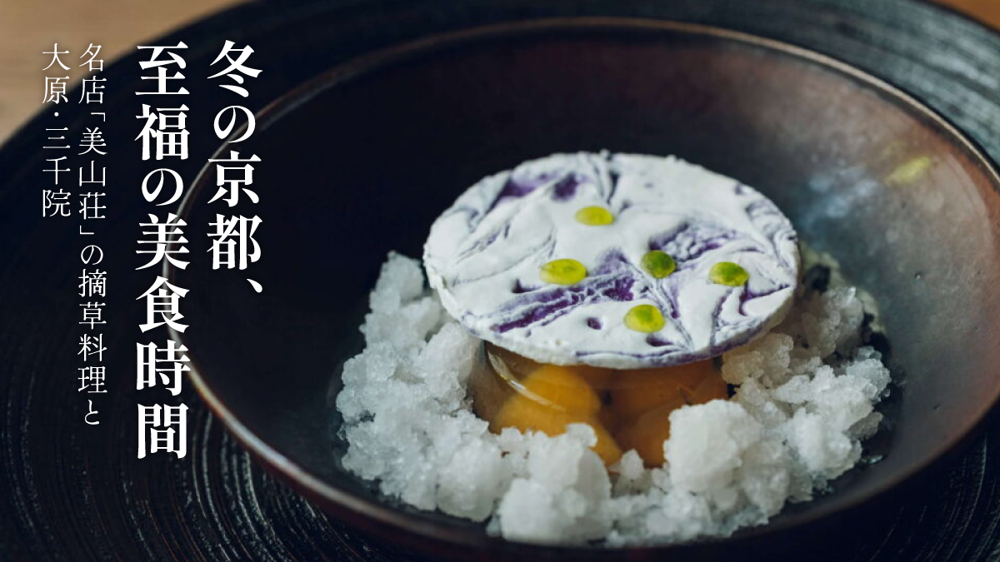
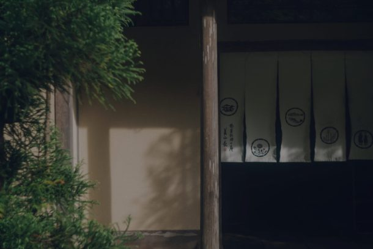
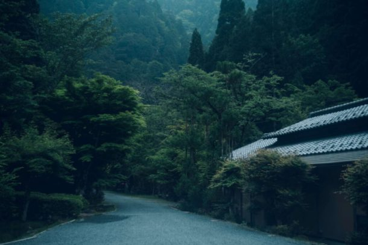
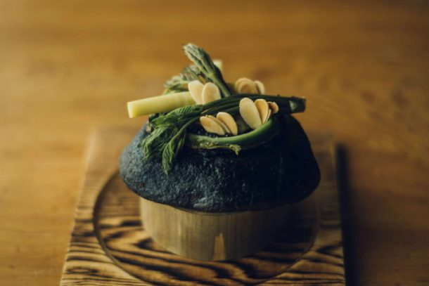
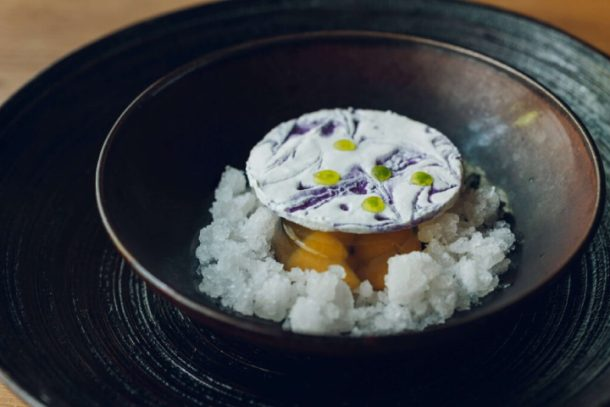

最新の情報は 公式サイトのツアーページ をご覧ください。
冬の京都、至福の美食時間 ～名店「美山荘」の摘草料理と大原・三千院～

※大人・子ども同額
特別な美食旅。
今回の旅の主役は、京都・花背の山深くに佇む名店「美山荘」。
四季折々の山野の恵みを生かした料理で知られる美山荘で、季節の味わいを大切にした「摘草料理」をご堪能いただきます。
日常を離れ、自然の恵みと料理人の繊細な技が織りなす、ここでしか出逢えない美食のひとときを。
お食事の前には、冬の大原を代表する名刹「三千院」へ。
静寂に包まれた境内をゆっくりと散策し、冬ならではの落ち着いた京都の風情をお楽しみください。
帰路には「ウッディ京北」にも立ち寄り、京北の特産品や地元の味覚のお買い物も。
名店で味わう特別な昼食と、冬の京都の美しい風景。少し贅沢に、心満たされる一日をお過ごしください。
| おすすめポイント |
| 🍴 一度は訪れたい京の名店「美山荘」で味わう摘草料理 京都・花背の山里に佇む名店「美山荘」。 自然の恵みを生かした繊細な摘草料理を、ゆったりとした昼食の時間にご堪能いただきます。 |
| ⛄ 冬の静寂に包まれる大原・三千院 苔庭や杉木立が美しい三千院。 観光シーズンとはひと味違う、冬ならではの落ち着いた境内を散策します。 |
| 🎁 京北の魅力に触れるお買い物タイム 地元の特産品や農産物などが並ぶ「ウッディ京北」へ。 旅の思い出に、京北ならではのお土産探しもお楽しみください。 |
| 🚙 MKタクシーでゆったり巡る少人数の旅 移動もタクシーなら、乗り換えや運転の心配なく冬の京都の山里を快適に巡れます。 |
行程
| 時間 | 場所 |
| 9:00 | 京都駅八条口MKタクシーのりば（集合・出発） |
| 10:00 | 三千院 |
| 12:00 | 美山荘 ★摘草料理をご賞味 ＜昼食／約120分＞ |
| 14:40 | ウッディ京北 |
| 16:00頃 | 京都駅八条口（解散） |
※渋滞等で、予定通りの滞在時間をお取りすることができない場合がございます。予めご了承ください。
美山荘




※写真はイメージです。お食事内容は季節により異なります。
【MKトラベルLINE公式アカウント】
MKトラベルの新規ツアー情報をLINEでお届けいたします

【各SNSでも京都の情報やツアー情報をお届けしています】


旅行条件
| ツアー番号 | T613MK |
| 出発地 | 京都市内 |
| 添乗員／ガイド | 添乗員：なし（乗務員がその業務を代行いたします） |
| 食事 | 1回 |
| 最少催行人数 | 4名 |
お申込みについてのご注意
※最少催行人数は4名様です。
※旅行条件・旅行代金は、2026年11月1日現在を基準としています。
※行程および帰着時間は交通事情などにより変更になる場合があります。
※お申込みの前に弊社の募集型企画旅行規約をご確認ください。
よくある質問
Q.1名ですが、申し込みできますか？
A.はい。お一人参加の方もたくさんいらっしゃいますので、お気軽にお申し込みください。
Q.日程が合いません／募集が終了していました
A.貸切で再現できる場合もございますのでご相談ください。お問合せフォームはこちら
Q. 通常の観光タクシーとの違いは何ですか？
A.MKのタクシーツアーの多くは乗合制となっておりますが、こちらのツアーは貸切での運行となります。
＜お問合せフォームはこちら▶＞
＜MKトラベルTOPはこちら▶＞
＜おすすめツアー一覧はこちら▶＞
【WEBシステム・お電話よりご予約の場合】
・クレジットカード決済
・コンビニ決済
・TACPO
お支払方法詳細はこちら
お客様のご都合でご予約をキャンセルされる場合は、すみやかに下記お問合せ先までご連絡ください。
キャンセル料
11日目に当たる日以前
無料
10日目に当たる日以降
20%
7日目に当たる日以降
30%
旅行開始日の前日
40%
旅行開始日の当日
50%
旅行開始後又は無連絡
100%